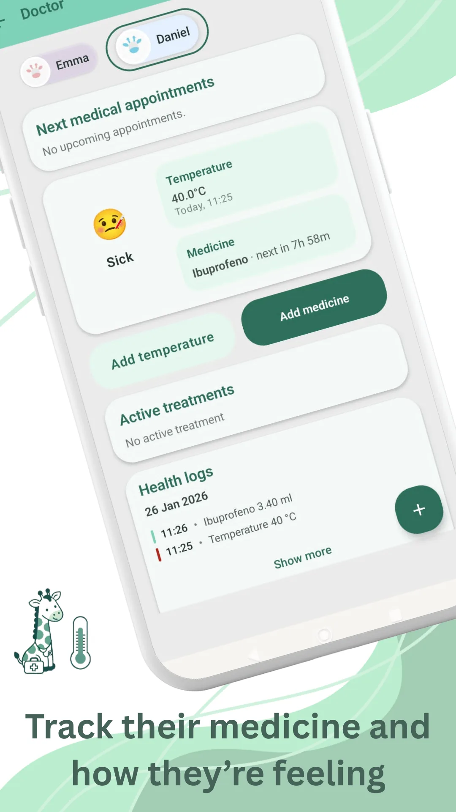

Sleeping
Track naps, bedtime, and wake windows in a baby sleep tracker that helps build a stable routine by age.
In the app
Baby tracker app for modern families
Build calmer days with clear routines and better visibility.
Raffy helps parents log sleep sessions, feeding, solids, growth measurements, diaper changes, medicines and daily notes with a timeline that stays easy to read.
Raffy is an Android app designed to simplify daily baby care. It gives families one place to monitor routines, check trends, and make confident decisions. For one-off planning, use web tools first, then continue daily tracking in the app.
Everything you need, one app
From first feeds to milestone tracking, Raffy keeps routines, health and growth connected.
Track naps, bedtime, and wake windows in a baby sleep tracker that helps build a stable routine by age.
In the appLog breastfeeding or bottles, track ounces and durations, and keep a reliable baby feeding tracker for everyday routines.
In the app
Monitor weight, height, and percentile trends with clear baby growth charts to discuss changes with your pediatrician.
In the app
Keep medicines, reminders, pediatric visit notes, and vaccine follow-ups organized in one baby health timeline.
In the app
Free web tools
Parenting guides
Actionable content about sleep routine, baby solids, growth tracking, and first-year development.
A warm, trimester-by-trimester guide to support your baby's development without pressure.

A practical 7-day menu for babies at 9 months with meal ideas, daily calories, and texture safety notes.
A first-person guide to first vaccine day: doubts, evidence, and calm after the appointment.
Build a realistic baby sleep routine by age with nap windows, bedtime consistency and wake-up anchors.
Read article FeedingA practical baby solids guide with BLW and puree options, safe food formats, and first-week planning tips.
Read article GrowthUnderstand baby growth percentiles, trend lines and when weight or height changes require pediatric follow-up.
Read article Android WorkflowLearn when a web tool is enough and when to move to ongoing tracking in Raffy Android app.
Read articleCommon answers about baby sleep, feeding, growth, and day-to-day use of Raffy.
Raffy helps you track baby sleep, breastfeeding or bottles, solids, diapers, medicines, vaccines, and growth measurements in one timeline.
No. You can use it from the newborn stage and adapt it through the first year and later stages as your routines evolve.
Yes. Core tracking can continue offline and sync later when you reconnect.
You can log naps, wake windows, bedtime, and night wakeups to identify patterns and adjust routines by age. For a practical plan, read this baby sleep routine guide by age.
Yes. Raffy helps you monitor weight and height trends to detect changes and review them with your pediatrician. You can expand with this baby weight and height percentiles guide and run values with the WHO growth percentile calculator.
Yes. You can track breastfeeding, bottles, and solids to keep a clear and useful feeding history.
Yes. You can keep medicines, reminders, and follow-up notes organized in one place.
Yes. Raffy is available on Google Play for Android devices.
Download Raffy on Google Play and start organizing routines in minutes.
Free · Android